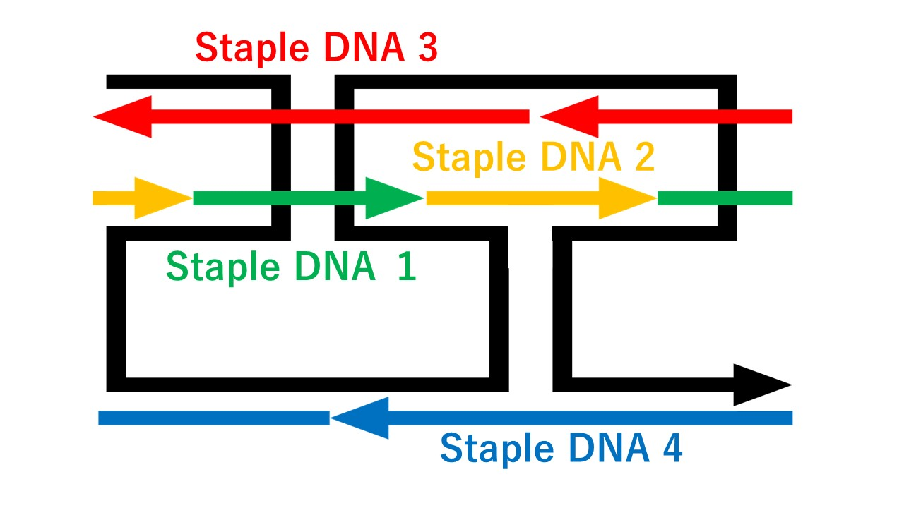

私たちがデザインするのは、入力依存的にオリガミ構造を解き、 ゲルを形成するデバイスである。 DNAゲルは、それを構成するDNA配列に遺伝子やアプタマーなどの情報を組み込むことが可能である。 故に、DNAゲルを、局所的かつ特異的に形成することができるデバイスは、 通常のゲルよりも容易かつ特異的に反応場形成や物質のトラップ＆リリースを可能にすることが期待できる。
私たちは、コンセプトを満たすデバイスの設計にあたり、RCAに目を向けた。
RCAとは、環状化一本鎖DNAを鋳型とし、結合させたプライマーからポリメラーゼを用いて伸長させる反応である。
この反応は、同じくポリメラーゼを用いる反応であるPCRとは異なり、対数曲線的な増幅はされないが、
鋳型DNAに相補な配列が繰り返された長鎖DNAを得ることができる。
このRCA産物について、ステープルDNAを添加することでオリガミ構造を形成させた先行論文がある。
96ntの一本鎖cDNAを鋳型としたRCA産物──すなわち、96ntの配列を繰り返し持つ長鎖一本鎖DNAに対し、
16ntのステープルと32ntのステープルをそれぞれ２種類、計４種類を添加することで、
DNAオリガミの設計原理にしたがったワイヤー構造を形成させることに成功している。
同時に、２種類のRCA産物を混合することで互いに接続し合い、特定の細胞を取り込みながらDNAゲルを構築させたという報告もある。
この論文では、2種類のRCA産物それぞれにお互いに相補になるような配列を挿入することで、お互いを認識、結合し、
多価効果によって濃度を上げていくことでDNAゲルを形成していく。
このとき、認識配列とは別の部分に骨髄間葉系幹細胞(BMSA)に特異的に結合するDNAアプタマー配列を導入することにより、
先の方法で形成され過程でDNAゲル中にBMSAが取り込まれる。
BMSAと他の細胞を分別することができたと報告されている。
RCA産長鎖DNAをオリガミ化するステープルDNAに鎖置換のためのトーホールド配列を追加することによって、 特定のDNAが存在するときにステープルDNAが外れ、遊離された長鎖DNAどうしが自己凝集するデバイスを、私たちは志向する。
まず、先行研究でオリガミ化を達成した鋳型、プライマー、stapleの配列を示す。
TAAGATGAAGATAGCGCACAATGGTCGGATTCTCAACTCGTATTCTCAACTCGTATTCTCAACTCGTCTCTGCCCTGACTTCTATGCCCAGCCCTG
CGAGTTGAGAATCCGACCAT
CCCTGACTCACAATGG
TCGGATTCCGTCTCTG
TAAGATGAAGATAGCGTCTATGCCCAGCCCTG
ACTCGTATTCTCAACTTCAACTCGTATTCTCA
このstaplesを、templateとprimerによって作成されたRCA産物に混和させると以下のような構造を取ると論文では報告している。 この構造を基礎に、以下ではデザインを行っていく

先行研究からオリガミ化が確認されたRCA templateおよびstapleの配列を引用し、
そのstaple DNAにトーホールド配列を追加することで、私たちのひとつめのデバイスを設計した。
私たちは、NUPACKを用いて設計した。NUPACKとは、核酸構造の解析、設計のためのソフトウェアである。
そのため、オリガミ状構造には対応しておらず、上記の構造をそのまま入力することはできなかったため、
各ステープルに着目して要素を細分化することで、RCA産物長鎖DNAとステープルの二次構造形成を阻害しないトーホールド配列を計算した。
具体的には、下の図のような細分化を他のstapleに対しても行い計算をした。
すなわち、４つの構造がワンポットに存在する状況を仮定し、その安定性の最適化を行った。
この簡略化は後のシミュレーションでも用いる。
以下がその結果によって得られた私たちのトーホールド付きステープル鎖である。
CCCTGACTCACAATGGACCGC
TCGGATTCCGTCTCTGATCTAT
TAAGATGAAGATAGCGTCAACTCGTATTCTCATTAGCT
ACTCGTATTCTCAACTTCTATGCCCAGCCCTGTTATTA
もうひとつの先行研究を参考に、ひとつめのRCA産物と特異的に結合してゲル化し、
ひとつめのRCA産物と同様の方式でオリガミ化が可能な２つ目のRCA templateを考察した。
まず、ひとつめのRCA産物と相補である認識配列を探索した。元論文では2種類の92ntのRCA産物どうしでのゲル化に実績があり、
この場合において相補的な配列は両者に37ntずつ含まれていた。このとき、GC含有率は50%、Tmは68℃であった。そこで、このような条件に類似する部分配列を既存のRCA templateから探し、以下に決定した。
ACTCGTATTCTCAACTCGTCTCTGCCCTGACT
この配列は、オリガミ化時に３つのステープルにまたがっており、配列長32nt、GC含有率は50%、Tmは66℃である。
そのうえで、一つ目のデバイスにてトーホールドの配列を計算したのと同様に、二つ目のRCA templateの未決定部分とトーホールド付きステープル配列をNUPACKでデザインした。
このとき、ひとつのチューブのなかに先行研究を基礎に設計したRCA産物デバイスも存在している状況を設定し、
かつ、今回に新規でデザインするRCA産物デバイスの濃度が一つ目に対して過剰にある状況を想定した。ひとつめに一つ目の配列の構造形成を阻害しない配列をデザインするため、
もうひとつにRCA反応は同じ配列を繰り返し増幅する反応であるため高濃度で存在したときに自己凝集を容易に起こさないようにするためである。
以下が、ここで得られたRCA templateとprimerの配列である。
AGTCAGGGCAGAGACGAGTTGAGAATACGAGTGCTCCCACCGCACGTCTCTGCTCGGTGGATAACGTGGTACCGCCGTTCTAGTACGGTGCACAAC
TGGGAGCACTCGTATTCTCA
二つ目のRCA産物について、ステープルに付属させるトーホールド配列を再度デザインした。先のデザインで既にトーホールド配列まで計算を行ったが、
RCA産物オリガミ１とRCA産物オリガミ２の濃度を同じ値にしたうえで再度計算を行った。これはトーホールド配列は鎖置換とそれに伴うゲル化の促進を目的としているため、
反応条件は２種のデバイスが同濃度で存在していると仮定するのが適切だと考えなおしたためである。
以下が、設計されたトーホールド付きステープルの配列である。
GTGGATAAAGTCAGGGTGTTTG
CAGAGACGTCTGCTCGGCACAT
GCTCCCACCGCACGTCAGTTGAGAATACGAGTTAGTCG
TAGTACGGTGCACAACCGTGGTACCGCCGTTCCCTGCG